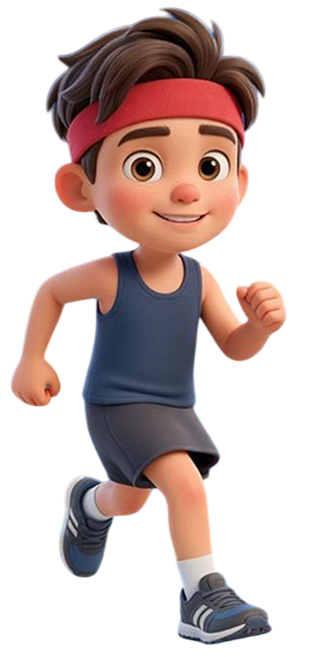
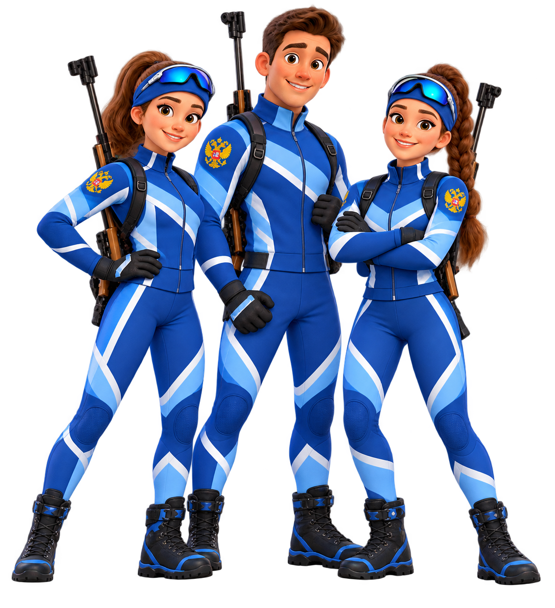

Герои проекта
Герои проекта — это участники разных возрастов, для которых биатлон ГТО стал частью жизни. Они — воплощение энергии спорта, но при этом не профессиональные атлеты, а такие же ребята, как и все остальные. Ведь «Биатлон ГТО» рад каждому!
Биатлошка
Первое знакомство со спортом через игру и пример родителей. Проект адаптирует элементы биатлона для самых маленьких.

Школьник
Совершенствует навыки стрельбы на уроках физкультуры, выступает на соревнованиях и выполняет нормативы ГТО.

Студент СПО
Представляет колледж на региональных стартах, помогает младшим товарищам и проходит судейскую практику.

Студент вуза
Разнообразит учебный процесс спортивной подготовкой, защищает честь университета и изучает спортивно-методическое направление.

Педагог и тренер
Внедряет модуль «биатлон» в уроки физкультуры, организует школьные спортивные клубы и повышает квалификацию.

Чемпион
Проводит лекции, мастер-классы и мотивационные встречи, делится опытом с подрастающим поколением.

Коллектив предприятия
Формирует рабочие команды для выступлений на стартах, проводит тренировки для укрепления здоровья сотрудников.

Команды муниципалитетов
Объединяют школы, колледжи и предприятия района в единую команду. Проводят местные этапы, формируют сборные и представляют свой муниципалитет на региональных и всероссийских стартах «Биатлона ГТО».